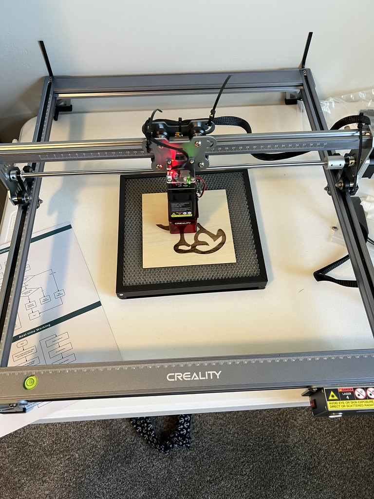

Welcome to DIY Laser Engraving
Explore the fascinating world of laser engraving and learn how you can start engraving your own projects at home.
There are many ways to start the journey of laser engraving. The first is to get a machine that you can operate at home. There is a great community that help each other with problems that others might have when first starting out.
Many resources that can be found on the internet can be helpful but sometimes confusing. This page will hopefully help make sense of how to get started with your very own engraving.
What Can You Engrave?
Laser engraving can be used on various materials including wood, glass, metal, and more. You can create personalized gifts, home decor, and even intricate art pieces. See the about me section to see some projects that you can do.